Instrukcje pomagające skomponować idealne owocowe dodatki dla Twojego prosiaczka. Zapoznaj się z nimi dokładnie i w razie wątpliwości zasięgnij opinii weterynarza, aby Twoje zwierzątko mogło cieszyć się zdrowym, długim i szczęśliwym życiem!
Spis treści:
Czy świnka morska może jeść owoce?
Zapewne tak samo jak wielu posiadaczy świnek morskich, chcesz rozpieszczać swoje zwierzątka, jak to tylko jest możliwe. Wiele osób robi to poprzez podawanie swoim pupilom przepysznych przekąsek w tym owoców. Dodatkowo owoce, oprócz niepowtarzalnego smaku, zawierają błonnik i witaminy. Są to składniki niezbędne do utrzymania zdrowia naszych pupili.
Jaka ilość owoców jest odpowiednia dla świnki morskiej?
Zwierzątka zazwyczaj nie przejadają się same z siebie, ale nawet względnie niewielkie ilości owoców mogą prowadzić do różnych problemów. Jako, że niektóre owoce zawierają zbyt dużo cukru, gryzonie mogą w szybkim czasie przyswoić zbyt dużą ilość kalorii co prowadzi do zwiększenia masy ciała, utrudniając im poruszanie się i zmniejszając ich komfort życia. Podsumowując dieta bogata w zbyt dużo słodkich owoców może powodować biegunkę oraz otyłość prowadzącą do cukrzycy. Dodatkowo niektóre owoce są dosyć kwaskowate co może podrażniać delikatne okolice pyszczków u naszych małych przyjaciół.
Generalnie przyjmuje się, że jeżeli śwince na dzień podaje się objętościowo około jeden kubek świeżych warzyw, to najwyżej 1/4 tego kubka mogą zajmować owoce. Najlepiej jednak podawać śwince owoce co drugi dzień, przy okazji monitorując czy gryzoń nie powiększa się w niekontrolowany sposób. Małe porcje owoców, podawane okazjonalnie z pewnością uszczęśliwią Twoją świnkę, dostarczając jej tak potrzebnej witaminy C.
Jak przygotować owoce do spożycia?
Wiemy już, że włączenie owoców do diety kawii domowej jest świetnym pomysłem. Dodatkowo warto też być pewnym, że podawane przez nas owoce są dla niej odpowiednio przygotowane. Niektóre rośliny mają trującą szypułkę, liście, nasiona lub trzon a inne mogą być trudne w pogryzieniu jeżeli nie są pocięte na małe kawałeczki. Poniższe zasady sprawią, że dając swojej śwince owoce sprawisz jej tylko i wyłącznie radość.
1. Kupuj owoce z miejsc, do których masz zaufanie
Każdy lubi oszczędzić nieco grosza i kupić coś z supermarketu, ale nikt nie chce jeść czegoś co jest zanieczyszczone pestycydami albo jest tak stare, że już gnije. Jeśli podasz taki niepewny owoc świniaczkowi może to sprawić, że Twój zwierzak zatruje się lub nawet umrze.
2. Myj owoce
Większość owoców sprzedawanych w sklepach spożywczych ma na sobie resztki chemicznych oprysków. Ważne jest więc aby przed podaniem dokładnie myć owoce w ciepłej wodzie. Zawsze róbmy to zanim zaczniemy kroić owoce, ponieważ trujące chemiczne związki znajdujące się na skórce mogą na ostrzu noża dostać się do soczystego miąszu.
3. Potnij owoce na małe kawałki
Świnki morskie mają duże zęby, ale dużo łatwiejsze będzie dla nich jedzenie owoców jeżeli potniesz je najpierw na małe części. Ważne jest również pozbycie się skórki z owoców, która mimo, że zawiera dużo witamin i minerałów to jest ciężka do strawienia. Szatkowanie owoców pomaga też rozprowadzić po pomieszczeniu ich apetyczny aromat co sprawi, że świnki będą czerpać z przękąski jeszcze więcej przyjemności
4. Pozwól owocom ogrzać się do temperatury pokojowej
Świnki nie do końca lubią zimne pożywienie. Właściwie może ono nawet zaziębić nasze świnki czego oczywiście nie chcemy. W wyniku czego zawsze gdy wyciągasz owoce z lodówki musisz poczekać, aż ogrzeją się one naturalnie do temperatury pokojowej. Zrób to przed umyciem i cięciem owoców dla jak najlepszego rezultatu.
5. Usuń wszystkie niedojedzone części
W wielu przypadkach można zauważyć, że świnka nie jest w stanie zjeść całej przenaczonej dla niej porcji. Szybko te niedojedzone cząstki zaczynają gnić, stają się siedliskiem bakterii oraz przyciągają insekty. Konsekwentnie więc usuwaj takie ewwentualne zostawione resztki godzinę po podaniu. To nie tylko pomoże w utrzymaniu otoczenia świnki czystym i suchym, ale także zapobiegnie powstawaniu nieprzyjemnego zapachu.
6. Zawsze myj naczynia
Jako, że nie chcemy aby naczynie na którym podajemy śwince jedzenie zostało zakażone przez bakterie występujące w posłaniu świnek pamiętajmy, żeby zawsze po posiłku umyć je w ciepłej wodzie. Ważne jest też żeby używać innych pojemników do siana, suchej karmy i warzyw/owoców.
Tabela uwzględniająca składniki odżywcze poszczególnych owoców.
Komentarze do tabelki:
- podane wartości składników odżywczych odnoszą się do 100g produktu (wyjątki są oznaczone)
- stosuj produkty o niskiej zawartości wapnia (Ca), który może się nagromadzać powodując kamienie i osad w przewodzie moczowym
- stosuj produkty o niskiej zawartości kwasu szczawiowego, który może łączyć się z wapniem tworząc osad złożony z kryształów szczawianu wapnia
- staraj się zachować równowagę pomiędzy wapniem i fosforem (Ca:P), utzymując całkowity stosunek pomiędzy 1,5:1 a 2:1
- unikaj podawania dużych porcji produktów bogatych w cukier i skrobie
- produkty podajemy w stanie surowym
- kliknij na nagłówki kolumny aby posortować wartości od najmniejszej do największej
- najedź kursorem na obrazek produktu aby powiększyć
Produkty podzielono na następujące grupy:
| Nazwa grupy | Częstotliwość podawania |
|---|---|
| A | podawaj codziennie |
| B | podawaj często, 2-4 razy na tydzień |
| C | podawaj okazjonalnie. 1-2 razy na tydzień |
| D | podawaj rzadko, 1-2 razy na miesiąc |
| Zdjęcie | Owoc | Kalorie | P (g) |
S (g) | Ca (mg) | P (mg) | Wit. C (mg) | Wit. A (mg) | Kwas szczawiowy (mg) | Stosunek Ca:P | Grupa | Komentarz |
|---|---|---|---|---|---|---|---|---|---|---|---|---|
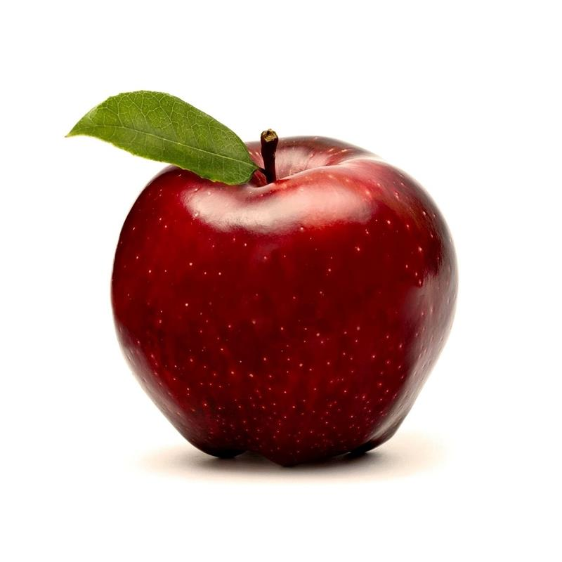 |
Jabłko | 52 | 0,26 | 10,39 | 6 | 11 | 4,6 | 3 | - | 0,5:1 | C | wysoka zawartość cukru |
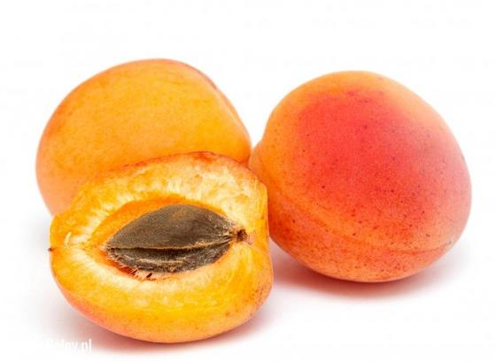 |
Morela | 48 | 1,40 | 9,24 | 13 | 23 | 10 | 96 | - | 0,5:1 | C | - |
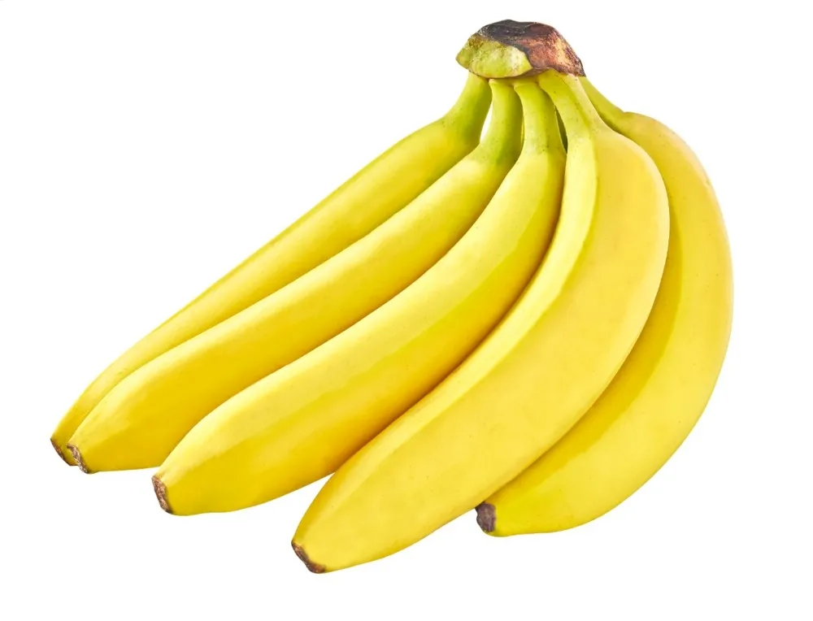 |
Banan | 89 | 1,09 | 12,23 | 5 | 22 | 8,7 | 3 | - | 0,2:1 | D | może powodować zaparcia, podawaj w małych ilościach |
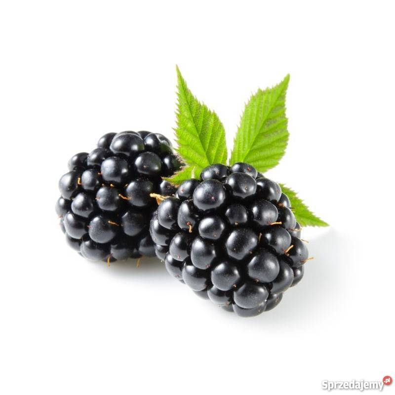 |
Jeżyny (25 gram) | 11 | 0,35 | 1,22 | 7 | 6 | 5,2 | 3 | - | 1,1:1 | B | - |
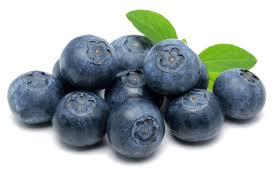 |
Jagody (25 gram) | 14 | 0,18 | 2,49 | 2 | 3 | 2,4 | 1 | - | 0,7:1 | B | - |
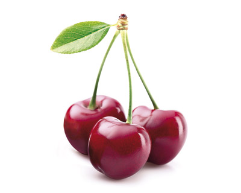 |
Wiśnie (25 gram) | 16 | 0,27 | 3,21 | 3 | 5 | 1,8 | 1 | - | 0,6:1 | B | przed podaniem usuń pestki |
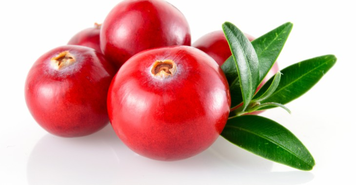 |
Żurawina (25 gram) | 12 | 0,10 | 1,0 | 2 | 3 | 3,3 | 3 | - | 0,7:1 | B | - |
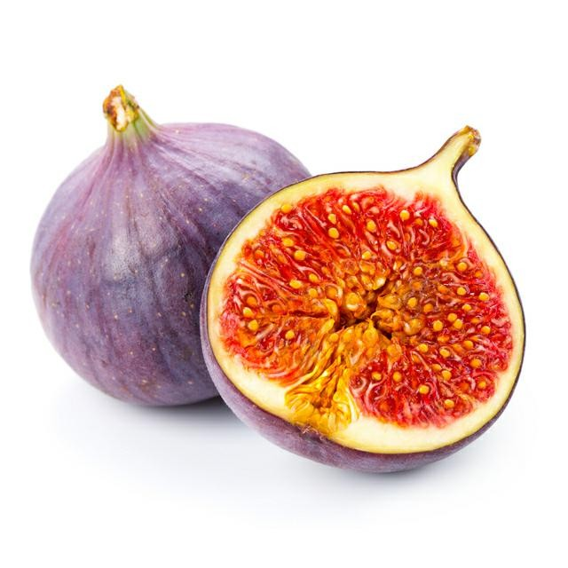 |
Figa | 37 | 0,38 | 8,13 | 18 | 7 | 1 | 4 | - | 2,6:1 | C | wysoka zawartość cukru |
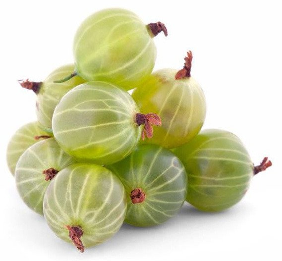 |
Agrest (25 gram) | 11 | 0,22 | 0 | 6 | 7 | 6,9 | 4 | - | 0,9:1 | A | - |
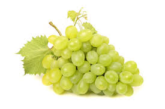 |
Winogrona (25 gram) | 17 | 0,18 | 3,87 | 2 | 5 | 2,7 | 1 | - | 0,4:1 | B | podawać gatunek pozbawiony pestek |
 |
Kiwi | 61 | 1,14 | 8,99 | 34 | 34 | 92,7 | 4 | - | 1,0:1 | C | - |
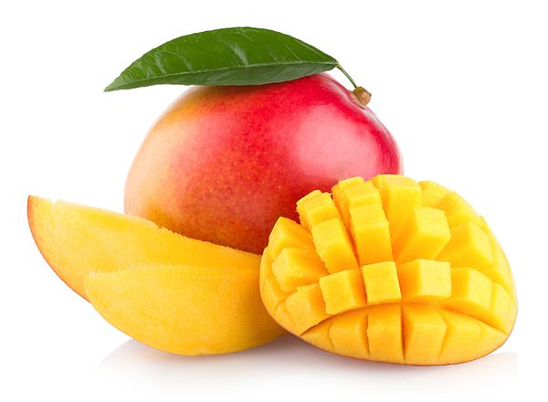 |
Mango | 65 | 0,51 | 14,80 | 10 | 11 | 27,7 | 38 | - | 0,9:1 | C | wysoka zawartość cukru |
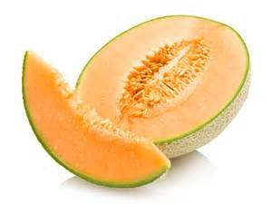 |
Melon | 34 | 0,84 | 7,86 | 9 | 15 | 36,7 | 169 | - | 0,6:1 | C | - |
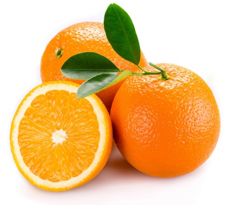 |
Pomarańcza | 47 | 0,94 | 9,35 | 40 | 14 | 53,2 | 11 | - | 2,9:1 | C | - |
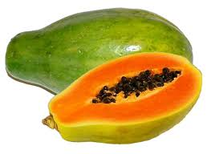 |
Papaja | 39 | 0,61 | 5,90 | 24 | 5 | 61,8 | 55 | - | 4,8:1 | C | - |
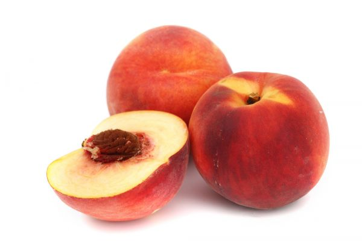 |
Brzoskwinia | 39 | 0,91 | 8,39 | 6 | 20 | 6,6 | 16 | - | 0,3:1 | C | - |
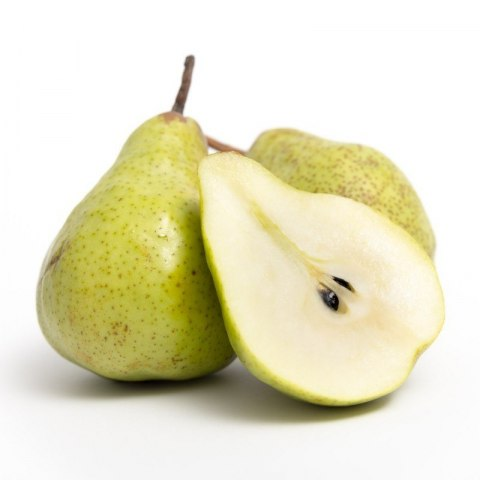 |
Gruszka | 58 | 0,38 | 9,80 | 9 | 11 | 4,2 | 1 | - | 0,8:1 | C | - |
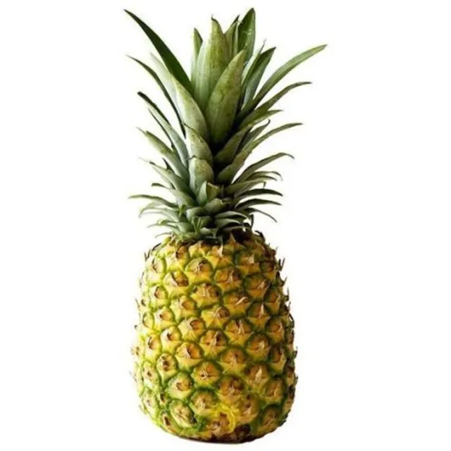 |
Ananas | 48 | 0,54 | 9,26 | 13 | 8 | 36,2 | 3 | - | 1,6:1 | C | - |
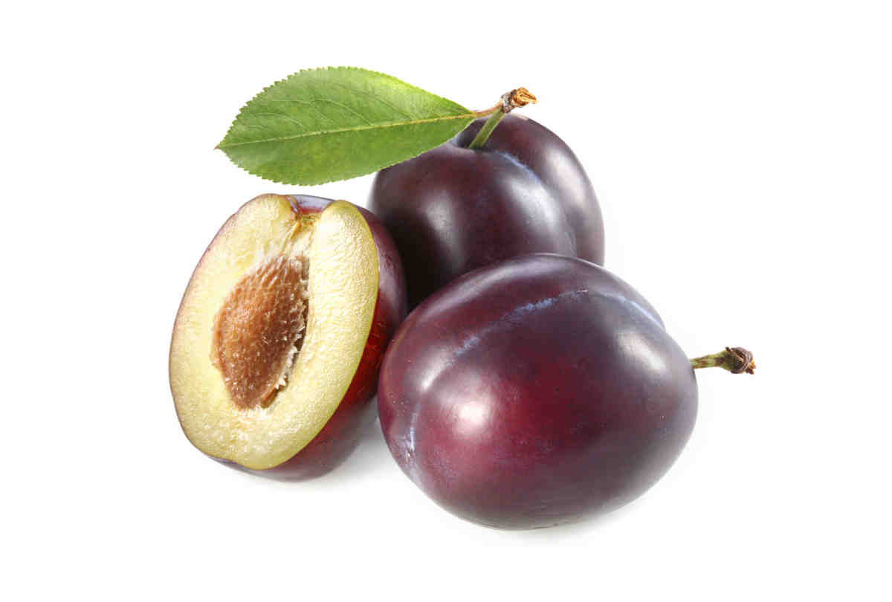 |
Śliwka | 46 | 0,70 | 9,92 | 6 | 16 | 9,5 | 17 | - | 0,3:1 | C | - |
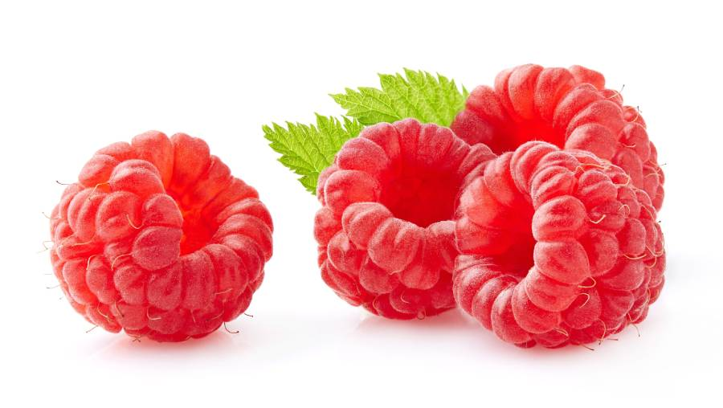 |
Malina (25 gram) | 13 | 0,30 | 1,10 | 6 | 7 | 6,5 | 0 | - | 0,9:1 | A | - |
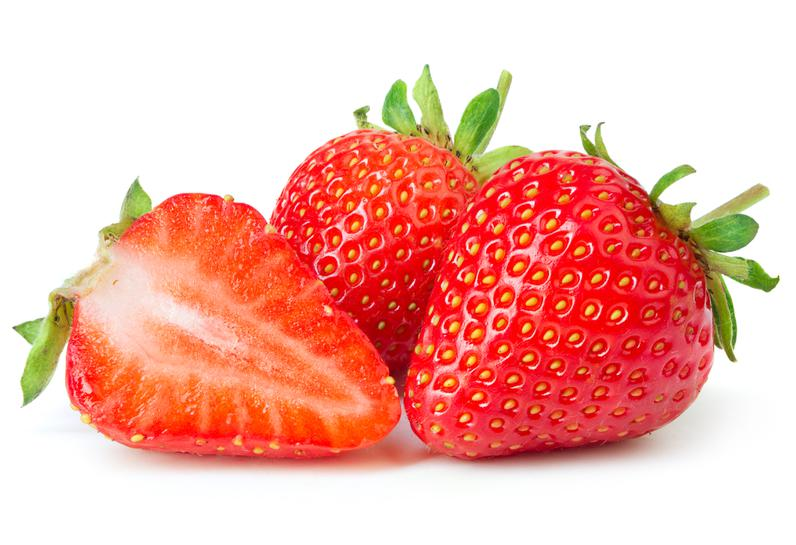 |
Truskawki (5 małych) | 11 | 0,23 | 1,63 | 6 | 8 | 20,6 | 0 | - | 0,8:1 | A | - |
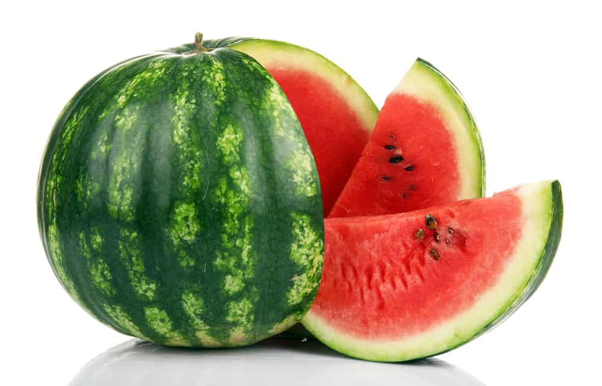 |
Arbuz | 30 | 0,61 | 6,20 | 7 | 11 | 8,1 | 28 | - | 0,6:1 | C | skórka jest jadalna |
Czego powinna unikać świnka morska?
Niektórzy weterynarze uważają, że winogrona mogą prowadzić do schorzeń nerek u świnek, dlatego należy unikać ich podawania. Ale jeśli już to robisz, to podawaj ich w niewielkich ilościach i dopilnuj by owoce nie zawierały pestek.
Świnki nie mogą też jeść trzonu jabłka ponieważ zawiera on cyjanoidy oraz inne szkodliwe toksyny. Pamiętaj więc aby przed podaniem usunąć z jabłka wszystkie niejadalne części.
Warto też zwrócić uwagę na kawałeczki suszonych owoców, które często znajdują się w suchej karmie. One w małych ilościach nie zaszkodzą Twojej śwince ale nie powinno sie ich podawać zbyt często ze względu na ekstremalnie dużą zawartość cukrów.